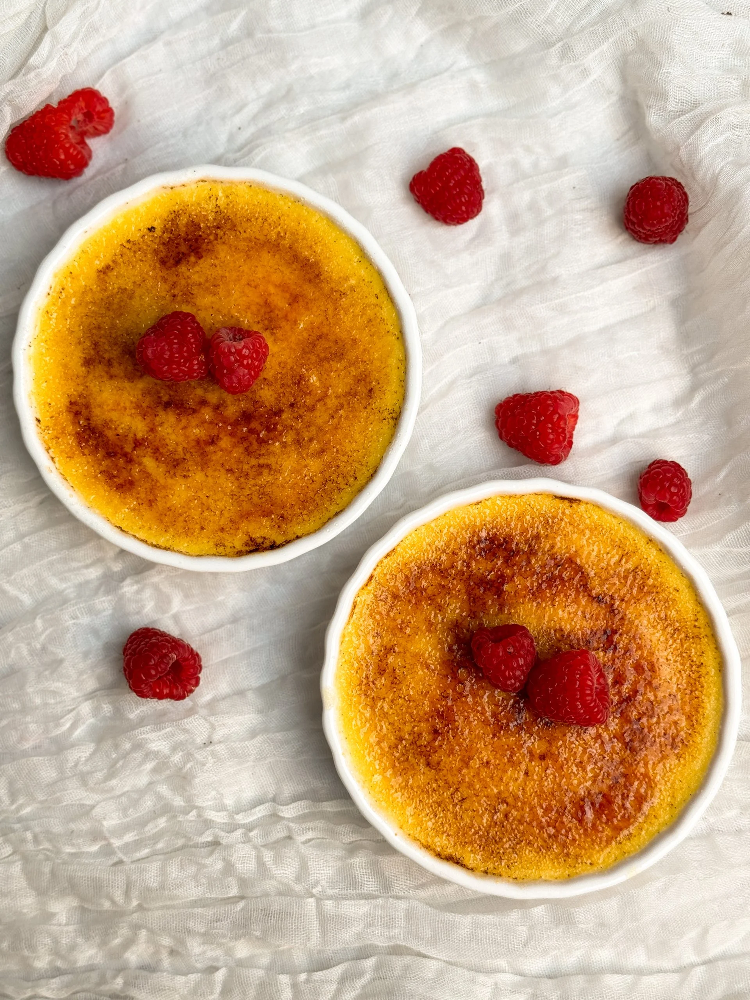

This is the Perfect Vanilla Creme Brulee Recipe: silky, creamy, and luscious with a thin and crispy caramel coating worthy of a fancy restaurant's dessert menu. And although Creme Brulee is often touted as a posh dessert sold, you'd be surprised to learn that it is actually extremely simple! You need just 5 ingredients including salt and vanilla, and 10 minutes of active work.


In recent years, Creme Brulee fusion desserts have become wildly popular on social media, such as Creme Brulee donuts (you should definitely check out mine!), cookies, cheesecake, and even pizza! Everyone always loves the ASMR videos of cracking the crust. But I feel like not enough people are making the actual dessert, and I'm here to change that. So if you've always been curious about Creme Brulee, this is your sign to actually make it.